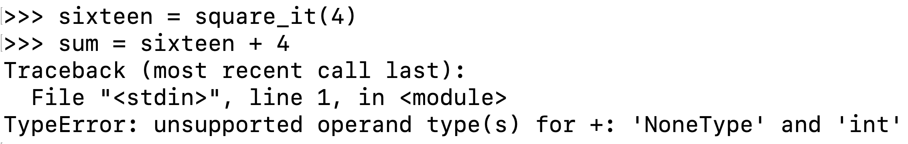

Congratulations on writing your first functions! Here are a few more helpful things to understand about return values and arguments.
The special value None represents nothingness in Python. Most languages have some way of representing nothingness, whether they call it None, nil, or null.
Any function that doesn't explicitly return a value will return None, like this one:
def square_it(x):
x * x
When you call a function that returns None, the console will show no output at all.
If you then accidentally try to use a None value as if it were a real value like a number or a string, you'll see an error.

If you see an error like that when testing a function, it's a good sign that you've forgotten to actually return a value.
So far, all of the functions we've seen and made ourselves are functions that return values. However, it is possible to use functions that cause side effects instead (or in addition). A side effect is some effect on the environment the code is running in, like a change to the visual display or manipulating files in the hard drive.
The most common side effect is logging to the console via the built-in print() function.
print("i'm here!")That function call doesn't return anything useful (just None) but it does have a useful effect, printing a string of text to the console.
Consider the following two function definitions:
def square_num1(number):
return pow(number, 2)def square_num2(number):
print(number ** 2)Function parameters make a function more customizable, since they allow us to pass in more information about how to compute something.
For example, the built-in round function accepts both the number to round and the number of digits that should be after the decimal point in the rounded result.
round(3.1415926535, 3) # Returns 3.142
round(2/3, 2) # Returns 0.67That second parameter is super useful! However, the most common use of round is just to round a floating point number to an integer. And in fact, we don't have to pass in a second argument in that case:
round(3.141) # Returns 3It's possible to leave off some arguments in a function call thanks to default arguments. When a parameter specifies a default value in the function signature, then Python uses that default value if that argument isn't passed in.
For example, the following function has one required parameter and one optional parameter with a default:
def calculate_dog_age(human_years, multiplier = 7):
return human_years * multiplierThese two lines of code have the same return value:
calculate_dog_age(3) # Returns 21
calculate_dog_age(3, 7) # Returns 21If we ever do want to specify a different multiplier, there are two ways to override the default arguments:
calculate_dog_age(3, 6) # Returns 18
calculate_dog_age(3, multiplier=6) # Returns: 18The first way is much shorter, but sometimes the second way is clearer, and is especially helpful when a function has multiple parameters with default values and you only want to override a subset of them.
Default arguments are a great way to make functions that are more flexible while still being simple to use in the majority of cases!
{% endblock %} {% block footer_scripts %} {% endblock %}